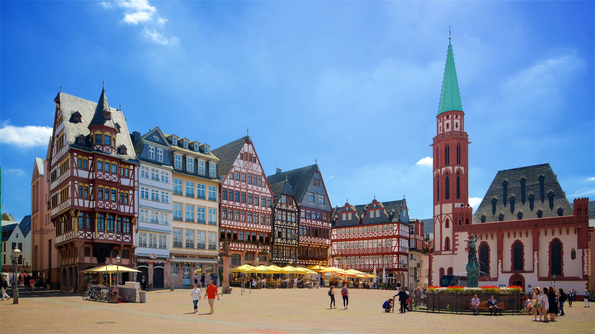
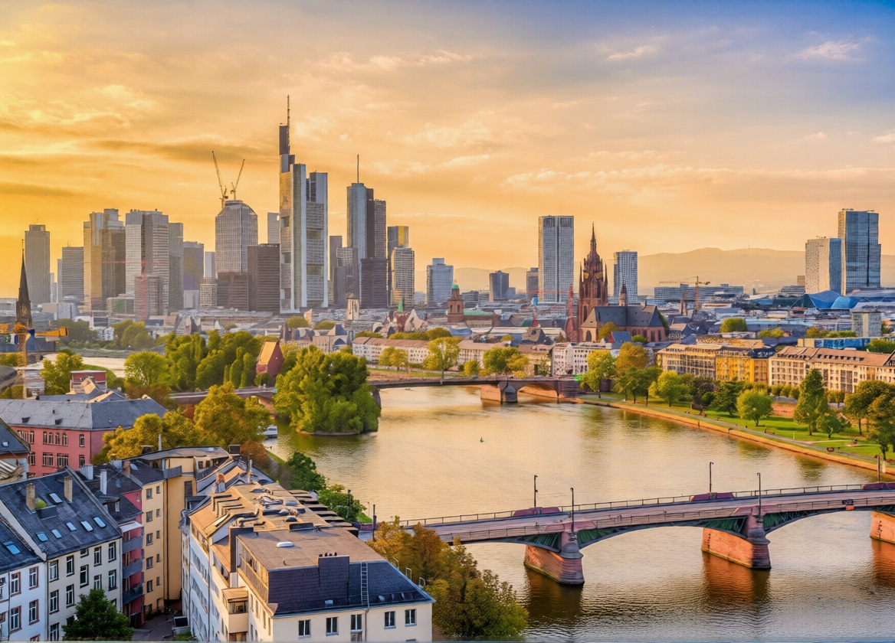
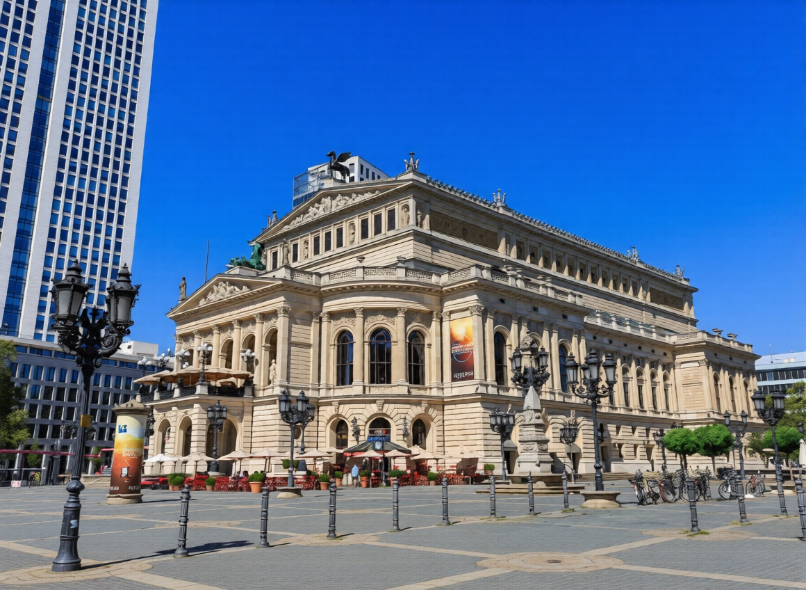
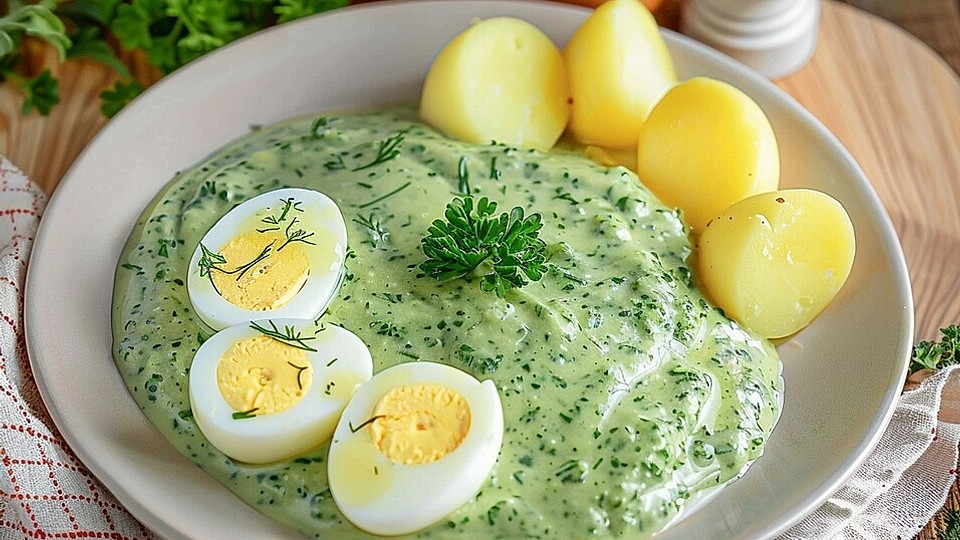
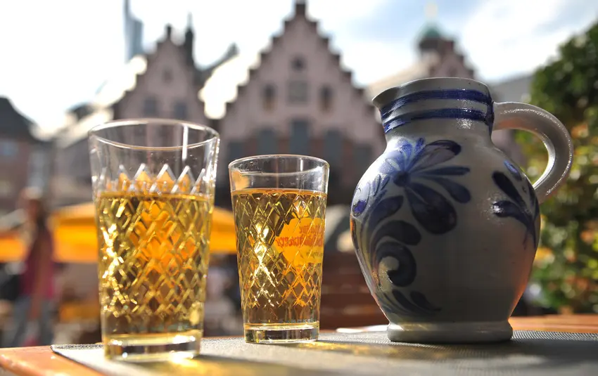
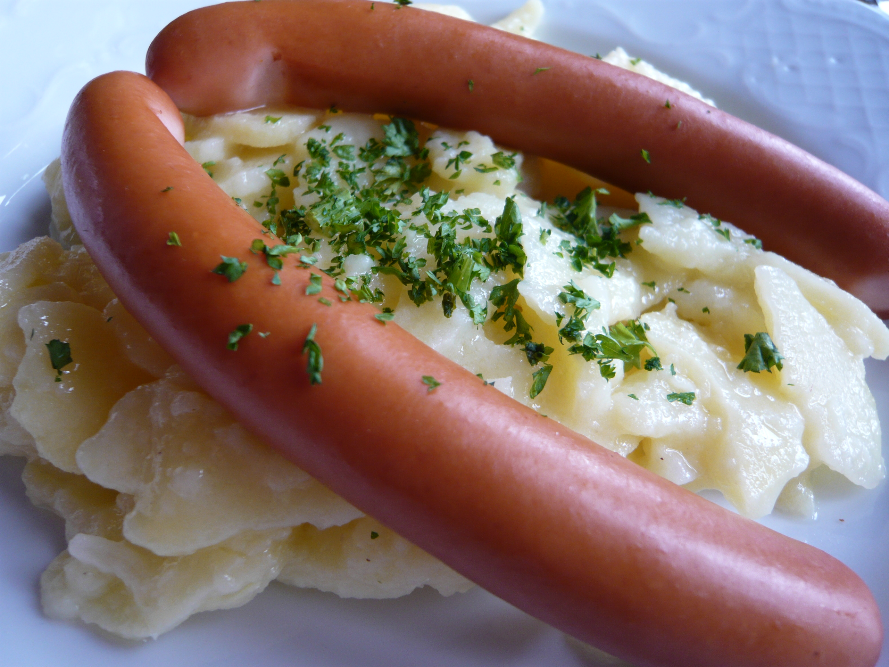

Römerberg – Historic Market Square
See how the half-timbered houses of Frankfurt's famous square looked before the war compared to the carefully reconstructed Römerberg we see today.
Past
Present


City
A financial powerhouse on the Main River where medieval trade routes meet glass towers and a busy airport.
Compare historic river views and market squares with today’s skyline and business district.
See how the half-timbered houses of Frankfurt's famous square looked before the war compared to the carefully reconstructed Römerberg we see today.

Contrast the post-war riverbank with bombed-out villas and a low skyline against today’s dramatic "Mainhattan" cityscape of glass and steel towers.

Compare the grand Frankfurter Opernhaus as it appeared around 1910 with the fully restored concert hall standing today alongside modern high-rises.


Frankfurt grew as a medieval trade and fair city and later became a center for banking and stock exchange. The city was heavily bombed in the Second World War, which led to large-scale modern reconstruction. After 1945, Frankfurt became an important financial hub in West Germany and, after reunification, for all of Europe. Today it hosts the European Central Bank and major trade fairs.
Despite its skyscrapers, Frankfurt also has cozy neighborhoods with traditional timber houses and apple wine taverns. The Museumsufer along the Main gathers many museums, and the city hosts international book and film festivals. The busy airport and train station make Frankfurt a gateway to Germany, bringing many languages and cultures together.

A cold "green sauce" made from seven herbs, usually served with potatoes and boiled eggs—a classic Frankfurt dish.

Local apple wine (Ebbelwoi) served in traditional taverns, often poured from a blue-grey stoneware jug called a Bembel into a diamond-patterned Geripptes glass.

Thin smoked sausages served with potato salad, known worldwide simply as "Frankfurters".